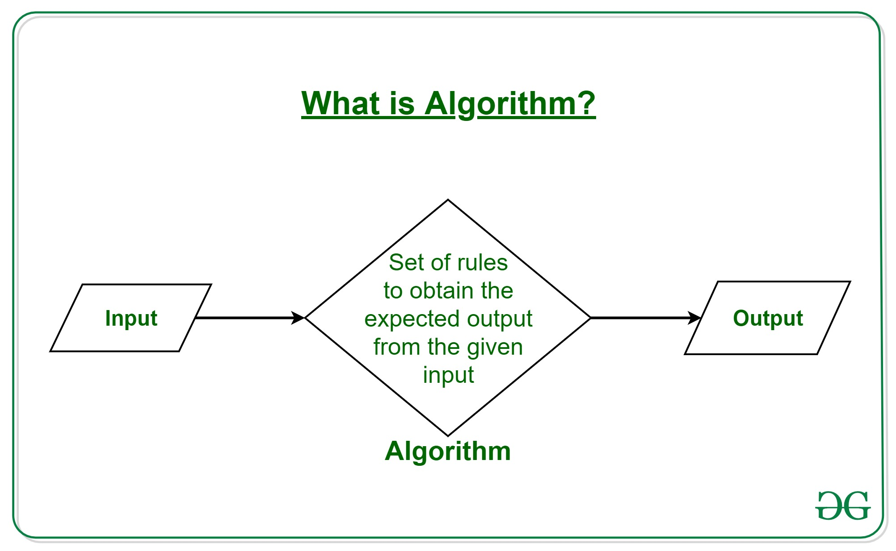
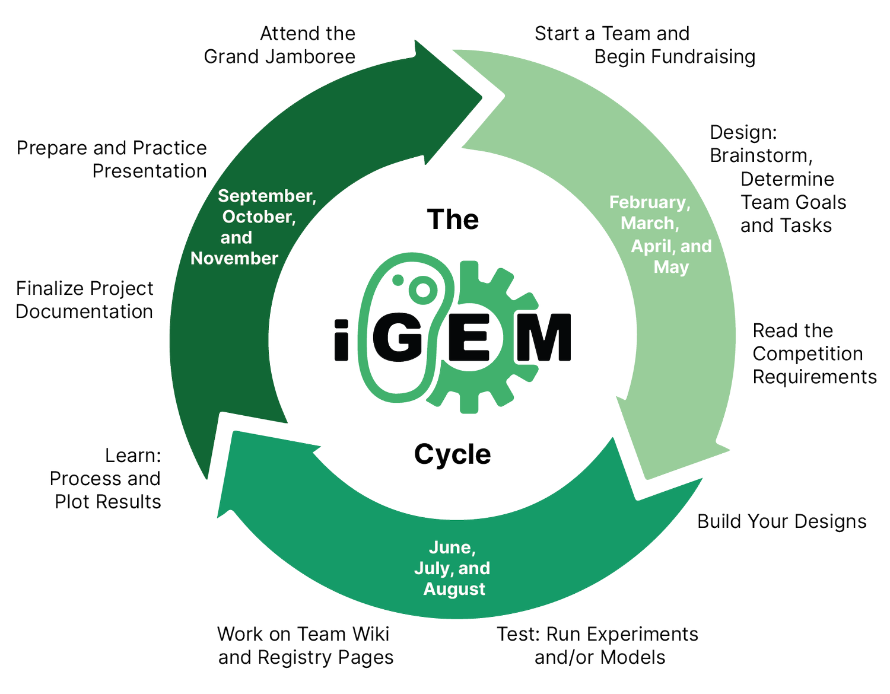

Interactive Logo!
What is an Algorithm? Algorithm Basics
The word Algorithm means ” A set of finite rules or instructions to be followed in calculations or other problem-solving operations ” Or ” A procedure for solving a mathematical problem in a finite number of steps that frequently involves recursive operations”.
Therefore Algorithm refers to a sequence of finite steps to solve a particular problem. Algorithms can be simple and complex depending on what you want to achieve.
It can be understood by taking the example of cooking a new recipe. To cook a new recipe, one reads the instructions and steps and executes them one by one, in the given sequence. The result thus obtained is the new dish is cooked perfectly. Every time you use your phone, computer, laptop, or calculator you are using Algorithms. Similarly, algorithms help to do a task in programming to get the expected output. The Algorithm designed are language-independent, i.e. they are just plain instructions that can be implemented in any language, and yet the output will be the same, as expected.
What is Dynamic Programming?
Dynamic Programming is mainly an optimization over plain recursion. Wherever we see a recursive solution that has repeated calls for same inputs, we can optimize it using Dynamic Programming. The idea is to simply store the results of subproblems, so that we do not have to re-compute them when needed later. This simple optimization reduces time complexities from exponential to polynomial.
For example, if we write simple recursive solution for Fibonacci Numbers, we get exponential time complexity and if we optimize it by storing solutions of subproblems, time complexity reduces to linear.
What is igem?(Internationally Genetically Engineered Machine)
iGEM is an academic competition aimed at improving peoples’ understanding of synthetic biology while also developing an open community and collaboration between groups. It is the most renowned Synthetic Biology competition for students. The competition began in 2004 and now has over 300 teams competing from locations around the world. The various teams all aim to design and engineer a new method of improving using synthetic biology. Projects range from improving the environment to producing new medicines or materials to colonizing other planets.
What is Wiki?
A wiki is a website that allows the site visitors to add and edit content. Generally, site visitors use their browser to edit text without requiring HTML code. Additionally, some Wikis allow adding and editing of graphics, tables and interactive components. The term wiki may also simply refer to the software used to create such a Web site. A blog site, by contrast, does allow visitors to add content, but does not usually allow them to change or edit previous comments from others
The 2022 iGEM Competition is now over
2022 was a milestone year, culminating with the first in-person gathering for the iGEM Grand Jamboree in Paris, a major undertaking that was nearly 4 years in the making. An international panel of 370 judges cast their votes to select the winning teams, and the results were impressive – with 173 teams earning gold medals, 94 teams earning silver, and 57 teams earning bronze. Congratulations to ALL teams! See the results.
Team wikis are thawed
Take this time to edit and update your wiki with final results from the Giant Jamboree, or to fix any mistakes. Wikis will be permanently archived on December 16, so please take an extra moment to review that your personal information and photographs.
The iGEM Cycle: How to Navigate the iGEM Competition
The natural world is filled with cycles … the carbon cycle, the cell cycle, the cycling of the seasons … to name a few. A cycle is also apparent in the iGEM Competition, where teams work with nature in engineering biology to solve local problems and tackle global challenges.
Starting an iGEM team and getting a project started in the iGEM Competition can be a challenge, even for returning teams. We have prepared this guide to help you understand what to expect throughout the iGEM Competition Cycle, whether this is your first time participating, or you are returning as a seasoned veteran.
OFF SEASON PHASE (DECEMBER-JANUARY)
During the competition season, there are 3 active phases in the iGEM cycle. While not all teams follow this cycle (for example, you may want to start work earlier or later than shown here, or you are working on a software project without a wet lab component), the major tasks within the 3 active phases of the competition season include:
PHASE 1 (FEBRUARY-MAY)
1. Start a Team
Decide the final team from the group of interested students.
2.Brainstorm Project Ideas
Ideally, iGEM projects are entirely conceived, led and driven by students. Many teams will have multiple
brainstorming sessions, sometimes with and sometimes without the team instructors.
3.Determine Team Goals and Tasks
This can be challenging, but well worth the effort in the end. A list of high level goals and a detailed list
of tasks needed to reach those goals will help your team stay focused on the project.
4.Read the Competition Requirements
Make sure that your team has covered all aspects of the requirements, deliverables, and deadlines, as some
aspects may be very important to know before starting to plan your project. This should be the responsibility
of the entire team and not the sole responsibility of one team member.
PHASE 2 (JUNE, JULY, AUGUST)
1.Start Work on Project
For wet lab work, you should get trained in protocols and follow your school's safety regulations, and start working on your project. You must also follow iGEM’s safety rules and policies throughout your project.
2.Build Your Designs
Order your DNA, and assemble your genetic devices and systems.
3.Run Functional Experiments and/or Models
This can be done throughout the cloning process once you have a functional device. Test your device and collect your data.
4.Process and Plot Your Results
Determine which software you need to use to process your data, determine the units you want to display, and make sure you include your controls during data analysis and show them on your graphs/plots.
5.Work on your Team Wiki and Registry Part pages
Good project documentation is essential for communicating your project to the world. You should be continually working on your Team Wiki and Registry Part pages throughout the project. Don't wait until the last minute!
PHASE 3 (SEPTEMBER, OCTOBER, NOVEMBER)
1.Create Materials to Showcase Your Project
Once you have your final data plotted and ready to show, you should create materials to showcase your project at the Jamboree.
2.Finalize Your Project Documentation
Now is the time to finalize your documentation, including Team Wiki, Registry Part Pages, and Judging Form.
3.Prepare and Practice Your Presentation
Similar to your Team Wiki, you should work on your presentation all throughout the project. Practice your presentation in front of a live audience to develop your presentation skills, and integrate feedback to refine the content.
4.Attend the Grand Jamboree in Paris
Meet other iGEM teams, celebrate your work, and have fun!